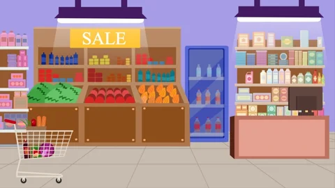
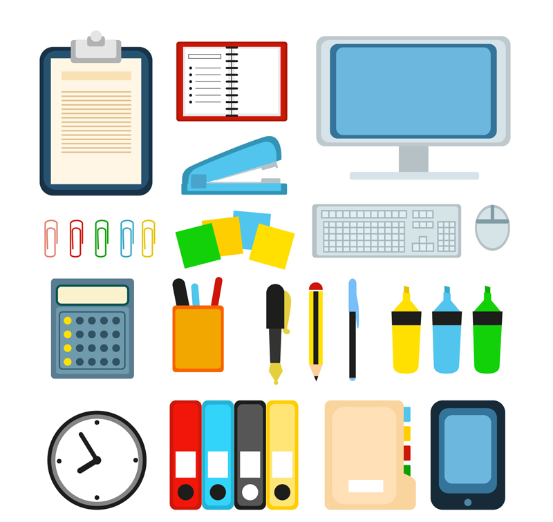
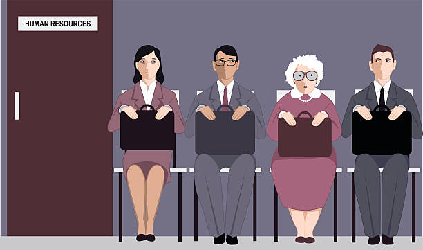
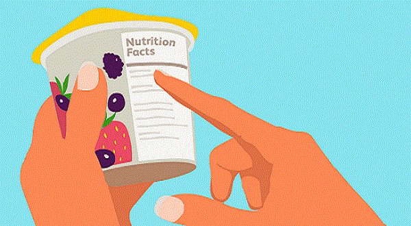
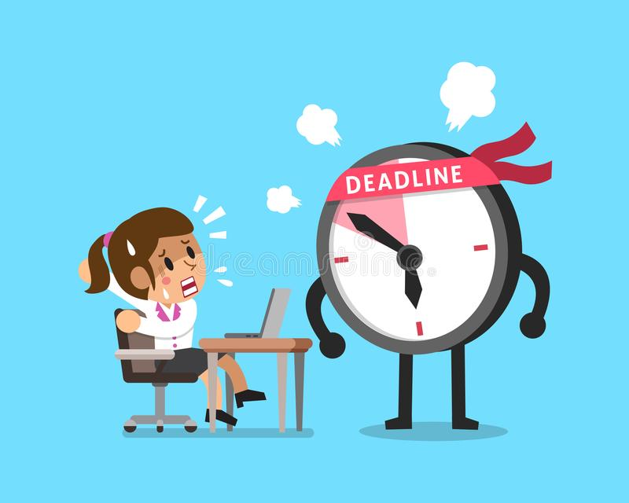
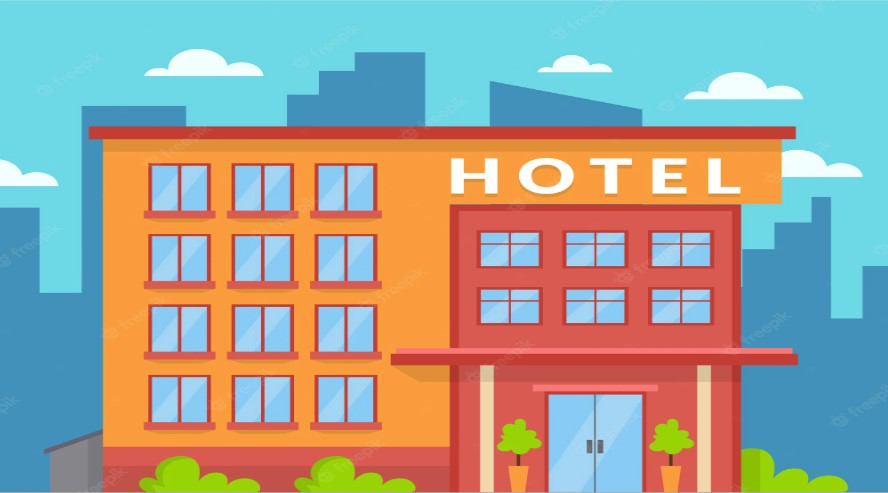

1. Supervisor
(noun)
Meaning: A person responsible for (or in charge of) other people (=manager) (=boss)
Example: I have a meeting with my supervisor about my sales figures. I’m really nervous.
2. Overdue
(adjective)
Meaning: Past the date you should do something by; late
Example: Unfortunately, as your previous payments are overdue, we cannot process your next order.

3. Merchandise
(noun)
Meaning: Products for sale (=goods)(=items)
Example: Our new stores have been fully stocked with a wide range of merchandise.

4. Subscription
(noun)
Meaning: Payment given for regularly scheduled publications (eg. newspapers, magazines) or performances
Example: My subscription to the magazine will expire at the end of the month.
5. Venue
(noun)
Meaning: A place where people meet for an organized event (=location)
Example: The committee decided to make the International Center in Milan the venue for next year’s conference.
6. Office supplies
(noun)
Meaning: Things used in offices that have to be replaced often. Usually small things that are used daily eg. marker pens, pencils, paper, printer ink, notepads. (=consumables)
Example: Our company orders new office supplies every month.

7. Background
(noun)
Meaning: Professional or academic experience
Example; This job would suit someone with a research background .

8. Expire
(noun)
Meaning: No longer useable (or valid) because the period of time for which it could be used has ended eg. passport, software license. Can also be used with food products eg. expiry date
Example: My driver’s license will expire next month so I need to renew it.

9. Consumer
(noun)
Meaning: A person who buys products. Usually used to describe the behavior of groups of customers.
Example: A female in her mid-30s would be a typical consumer of this product.
10. Applicant
(noun)
Meaning: A person who submits papers in order to do something, e.g. apply for a job (=candidate)
Example: If you are a successful applicant , you will receive an email invitation for an interview.
11. Deadline
(noun)
Meaning: The time something must be finished by (=due date)
Example: When’s the deadline for this project? This Friday or next Friday?

12. Accommodation
(noun)
Meaning: A place to live or stay in eg. apartment, hotel, or dormitory
Example: Mary was asked to arrange accommodation for the two-day business trip.

13. Voucher
(verb)
Meaning: A piece of paper that you can use (instead of money) to buy products or get them at a lower price
Example: This voucher gives you 10% off your next purchase.